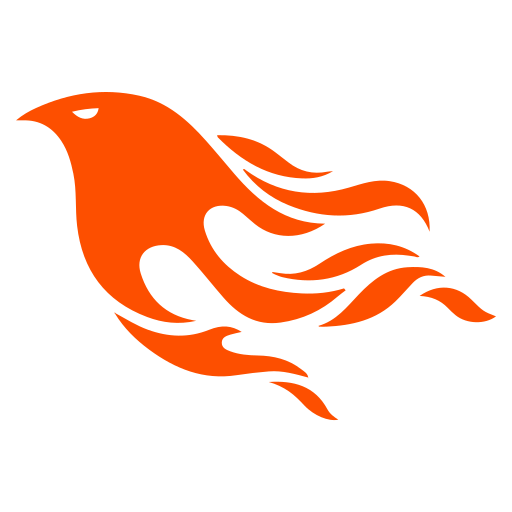
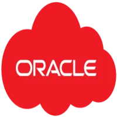
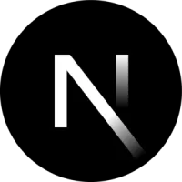
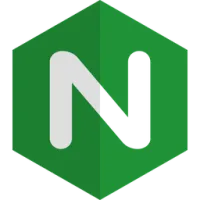
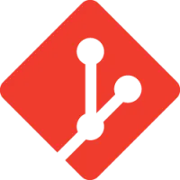
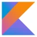

Full-Stack Lead
Survation Panel System
Full-stack survey platform for a UK market research leader. Reduced cloud costs by 30% and improved response times by 40%, all with zero downtime.
Full-Stack Software Engineer & Cloud Systems Architect. Across every recommendation, one thing stands out: I handle the full stack, from front-end to back-end to infrastructure. Your team deals with one person who knows your whole architecture inside out. No hand-offs, no gaps, no context lost.
Languages, frameworks, clouds, and tools I use to design, build, and operate real systems.

Phoenix Terraform
Terraform Ansible
Ansible Docker
Docker AWS
AWS Azure
Azure
Oracle Cloud Angular
Angular React
React
Next.js PostgreSQL
PostgreSQL Redis
Redis
Nginx Python
Python Bash
Bash
Git
KotlinA few highlights where full-stack depth paid off in cost, speed, and reliability.
Full-stack survey platform for a UK market research leader. Reduced cloud costs by 30% and improved response times by 40%, all with zero downtime.
Oracle Cloud Infrastructure as Code for SkunkWerks. Cut deployment time by 70% and eliminated manual errors, setting them up for effortless scaling.
Custom Min.io deployment for Headbright Group. Saved $12K/year in storage costs and achieved 99.99% uptime.
All recommendations are verifiable on LinkedIn.
"Maikel has a wide range of tech skills already to draw from, and navigated our unfamiliar environment easily. He picked up our diverse tech stack very quickly, and made rapid progress with very little hand-holding. He was a pleasure to work with, and I'd gladly do so again."
"I had the pleasure of working with Maikel at Survation where he single-handedly created our online panel from scratch and demonstrated exceptional skills and expertise throughout the entire process. His proficiency in front-end technologies, coupled with his expertise in back-end frameworks and databases, allowed him to develop a reliable and responsive panel. Maikel was always ready to tackle challenges head-on, providing innovative solutions to any issues that arose during the development process. He consistently communicated progress updates, sought feedback, incorporated suggestions promptly, and created plain language user guides making him an invaluable asset to the team. I am confident that Maikel will excel in any project he undertakes and contribute significantly to its success."
"Maikel designs systems to solve complete business problems, rapidly learning whatever is needed to detect, resolve and prevent issues for the long term. His effort and commitment in the workplace is always impressive and I recommend his services to anyone needing a rapid build-out of a stand-alone project or resolution of technical issues with existing deployments."
"Maikel has been an exceptional asset to our team during our time working together. Maikel's expertise in IT and his unwavering commitment to delivering streamlined support for our staff have truly made a significant impact in our organization. Throughout our collaboration, I have had the privilege of witnessing Maikel's exceptional technical skills and his ability to solve complex IT challenges with ease. His deep understanding of various systems and technologies, coupled with his willingness to share his knowledge, has been invaluable to our team's success. Maikel consistently goes above and beyond to ensure that our staff members have the necessary tools and support to perform their duties efficiently. One of the most admirable qualities of Maikel is his patience and dedication when teaching others. He possesses a rare talent for breaking down complex concepts into easily understandable terms, which has allowed me and other team members to acquire new skills and knowledge in the field of IT. Maikel's willingness to share his expertise has not only enhanced our individual capabilities but has also fostered a collaborative and supportive work environment. Maikel's professionalism, attention to detail, and strong work ethic are truly commendable. He consistently meets deadlines, manages priorities effectively, and remains calm under pressure. His proactive approach to problem-solving has significantly contributed to the successful implementation of various IT solutions and the overall efficiency of our projects. I have no doubt that Maikel's exceptional skills and dedication would be a valuable asset to any organization. His technical expertise, combined with his ability to teach and support others, makes him a standout professional in the field of IT. I highly recommend Maikel without reservation and believe that he will continue to excel in his future endeavours."
Have a full-stack or cloud challenge? Let's talk about how to solve it end to end.
Connect on LinkedIn →